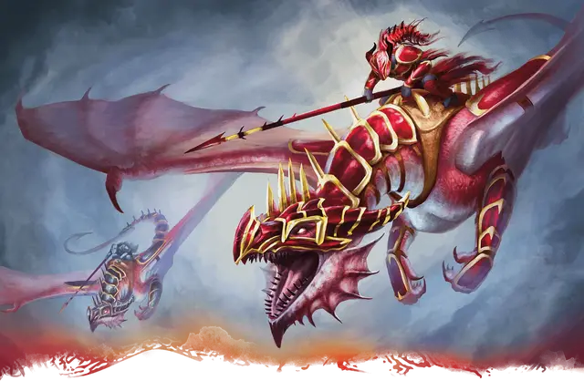

Алая погибель
Red Ruin
Средний Гуманоид, законно-злой, именной НИП

Класс Доспеха 20 (латы, щит)
Хиты 150 (20к8 + 60)
Скорость 30 футов
| мод | спас | ||
|---|---|---|---|
| СИЛ | 19 | +4 | +8 |
| ЛОВ | 12 | +1 | +5 |
| ТЕЛ | 17 | +3 | +3 |
| мод | спас | ||
|---|---|---|---|
| ИНТ | 13 | +1 | +1 |
| МДР | 14 | +2 | +2 |
| ХАР | 15 | +2 | +2 |
Навыки Атлетика +8, Восприятие +5
Сопротивление урону огонь
Чувства пассивное Восприятие 16
Языки Общий, Драконий
Опасность 10 (5900 опыта)
Бонус мастерства +4
Особенности
Драконья преданность. Пока Алая погибель может видеть невраждебного ему Дракона, она совершает с преимуществом броски атаки.
Мастер сражения верхом. Если существо нацеливается атакой на осёдланного Красной погибелью скакуна, она может принять эту атаку на себя.
Увёртливость всадника. Если Алая погибель или её скакун должны совершить спасбросок Ловкости, чтобы получить только половину урона от эффекта, вместо этого они не получают урона при успехе или получают лишь половину урона при провале.
Действия
Мультиатака. Алая погибель совершает три атаки Тлеющим копьём.
Тлеющее копьё. . Рукопашная атака оружием: +8 к попаданию, досягаемость 10 фт., одна цель. Попадание: 10 (1к12 + 4) колющего урона плюс 7 (2к6) урона огнём. Если цель — существо Среднего размера или меньше, она должно преуспеть в спасброске Силы Сл 16, иначе будет сбита с ног.
Ручной арбалет с разрывными болтами (перезарядка 5-6). Алая погибель стреляет разрывным арбалетным болтом в точку, которую она может видеть, в пределах 120 футов. Когда болт достигает этой точки или попадает в предмет, не долетев до этой точки, он взрывается сферой с радиусом 20-футов. Все существа в этой области должны совершить спасбросок Ловкости Сл 15, получая 35 (10к6) урона огнём при провале или половину этого урона при успехе.
Описание
Алая погибель — знаменитый ас, летающий на драконнели и славящийся своей невероятной наблюдательностью и рефлексами. Она возглавляет воздушно-десантные силы Красной Драконьей армии. Её настоящее имя неизвестно, поэтому союзники называют ее просто «командир» или «Алая погибель». Это прозвище она получила после уничтожения многочисленных целей с воздуха. Она редко снимает свой шлем в форме головы драконнели, что порождает спекуляции о её настоящей личности. Кроме того, она мало говорит, а в полете управляет всадниками на драконнелях с помощью отточёных жестов рук.